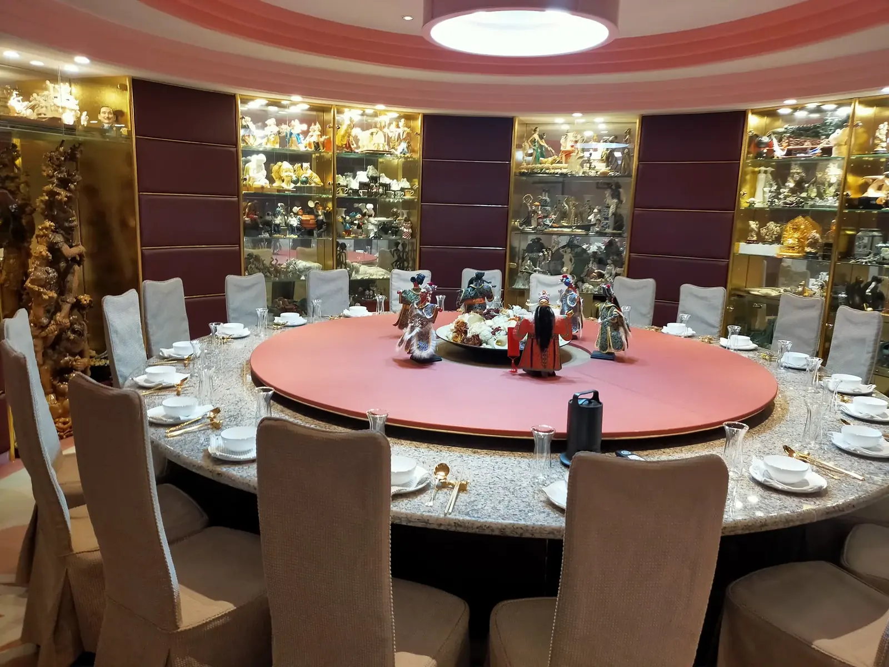

很多人第一次接觸到府私廚服務時，最常問的就是「到底怎麼算錢？」。事實上，到府私廚的報價並不是單一價格表，而是由五個核心成本組合而成：食材成本、主廚與助理團隊人力、交通與設備運輸、現場服務與擺盤，以及餐後清潔復原。這也是為什麼同樣是「到府私廚」，價格可以從三萬多元到十幾萬元不等——差異幾乎都來自這五個項目的等級與規模。
以最基本的 6-8 人套餐來說，行情約從 NT$35,000 起。這個價位通常包含主廚一名、助理一名、中西式套餐 6-8 道菜、基本餐具與桌面佈置，以及餐後清潔。如果加入頂級食材（例如日本和牛、活龍蝦、松露）或指定金帽獎主廚親自到場，價格會依照食材與人力調整。
豪宅、私人會所、遊艇、企業辦公室或戶外場地，對設備搬運與現場動線的要求完全不同。例如遊艇宴會需要考量空間限制與食材保鮮運送，豪宅則常需要多趟搬運廚房設備，這些都會反映在服務費用中。
是否需要主廚本人親自到場（而非由團隊執行）、現場服務人員數量、上菜節奏是否需要專人控場，都會影響人力成本。像董事長宴請或企業 VIP 接待這類場合，主廚林東立通常會親自到場，人力配置也會比一般家庭聚餐更完整。
和牛、松露、活龍蝦、日本直送海鮮這類食材，價格波動大且成本高，是報價中彈性最大的一塊。建議在預約時先確認「有沒有一定要吃到的食材」，主廚才能精準抓預算。
私人家宴、企業尾牙春酒、VIP 商務接待、求婚驚喜晚宴，彼此的菜單設計邏輯不同——家宴重視溫馨與客製化，企業場合重視效率與呈現規格，求婚場合則需要額外的氣氛佈置與時間點掌控，這些都會影響整體規劃複雜度與報價。
6-8 人的小型場次與 20-30 人以上的大型宴會，在食材採購、人力調度與出菜節奏上是完全不同的規劃邏輯。人數越多，通常單人平均成本會略為下降，但整體團隊規模與現場管理難度會提高。
迷思一：「到府私廚一定比餐廳貴」。其實不一定。若以「多人分攤」的角度計算，到府私廚的單人成本有時反而比同等級的星級餐廳合菜更划算，尤其是包含場地佈置、專屬服務與隱私的情況下。
迷思二：「報價是固定公版價格」。到府私廚幾乎沒有真正的「公版價」，因為食材、場地與人數組合太多。任何標榜「一律 NT$XX 元」的方案，通常代表菜色與食材等級也是最基本規格，實際預約前務必確認菜單細節。
迷思三：「先訂日期，價格之後再談就好」。建議在預約時就先溝通預算區間，主廚才能在食材與菜單設計上做出最適合的安排，避免臨時追加預算造成困擾。
先定人數與場合性質：人數決定食材採購量與人力配置，場合性質（家宴／商務／慶祝）決定菜單設計方向，這兩項是報價的起點。
再談食材優先順序：把「一定要有」與「可以彈性調整」的食材分開列出，讓主廚在有限預算內做出最佳配置。
提前預約，避免加急費用：一般建議提前 7-14 天預約，熱門節慶建議提前 1 個月以上，若指定主廚本人到場，建議提前 2-4 週安排檔期，避免臨時加急影響食材採購彈性。
更多方案細節可以參考 菜單方案 頁面，或直接與我們聯繫，讓主廚依照您的人數、場地與預算，提供最合適的專屬報價。
提供活動日期、人數與場地，我們將提供最適合的到府私廚方案。